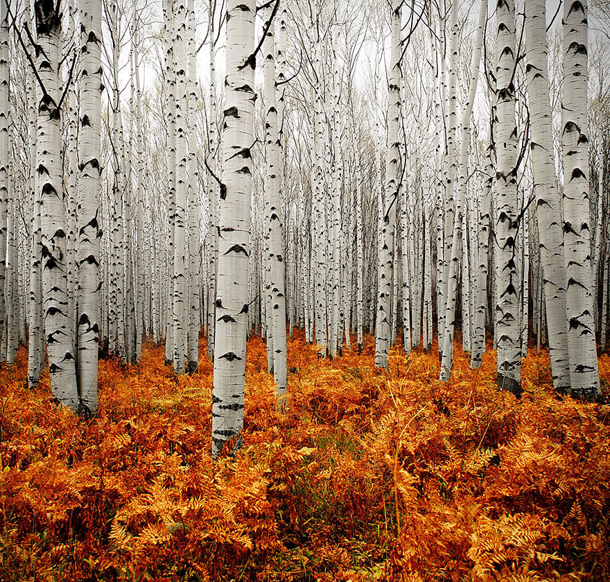
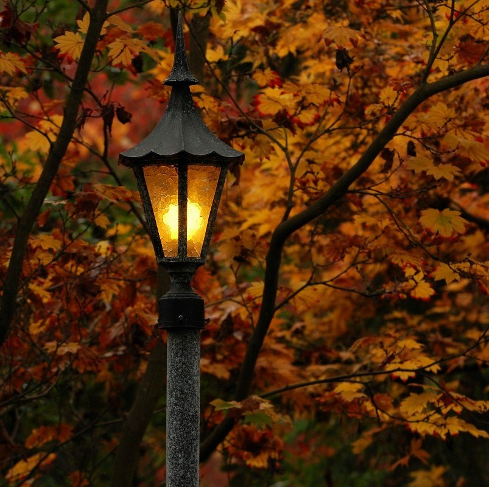

Gurzun Andrei
Ministerul fericirii supreme, de Arundhati Roy
La douăzeci de ani de la cartea ei de debut, Dumnezeul lucrurilor mărunte, care a câștigat Booker Prize în 1997, după același număr de ani de activism și mai multe volume de eseuri publicate, scriitoarea indiană a revenit la literatură cu mult așteptatul roman Ministerul fericirii supreme. Arundhati Roy ne dăruiește, cu același amestec irezistibil de furie și tandrețe, un mozaic al Indiei contemporane, într-o amplă simfonie literară închinată celor care, răniți de lumea dezumanizată, sunt salvați de iubire și speranță.
Ministerul fericirii supreme ne poartă într-o călătorie care se întinde pe mai mulți ani, ieșind din mahalalele înghesuite ale vechiului Delhi, trecând prin noua metropolă înfloritoare și ajungând în Valea Cașmir și pădurile din India Centrală, unde războiul e pace, iar pacea e război și unde, din când în când, se declară „normalitatea”. (©Editura Humanitas Fiction)
Gurzun Andrei
What’s Expected From Any Website Today
A great website satisfies unconscious consumer expectations and desires, including:
1.Clarity. The user expects to know a.) exactly what the organization does b.) why she should trust the organization c.) what action she should take — in under a minute — on any device.
2.Great User Experience. The user intuitively knows where to go to find any and all information he needs from the website.
3.Simplicity. Strategically uses images, videos, and whitespace to cut down on the time it takes for the user to distill the main messages.
4.Aesthetics. Incorporates attractive design elements reflective of your company’s brand and current design trends.
1.Autumn photography
2.Autumn :)
3.Autumn :(

4.Autuuuuumn :|

5.Autumnnn